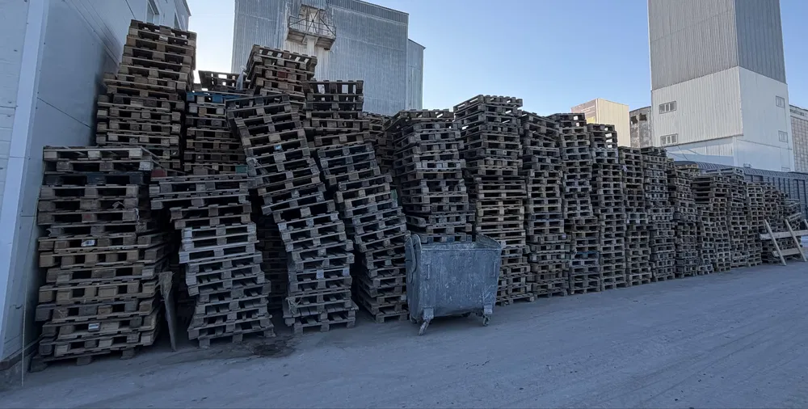

Европоддоны
120 × 80 см · Б/у
2 000 ₸
за поддон
Уточнить наличие ↗Евро, широкие и EPAL. Выберите размер, напишите количество — уточним наличие и рассчитаем вашу партию.
+7 701 231 0555

Астана, район Чугунки / шоссе Алаш. Точный адрес и время погрузки согласуем при обращении.
Поможем найти перевозчика по городу или в другой регион. Доставка оплачивается отдельно — стоимость рассчитаем под вашу партию.
Фото реального склада. Поддоны бывшие в употреблении: состояние, количество и итоговую стоимость подтвердим перед покупкой.